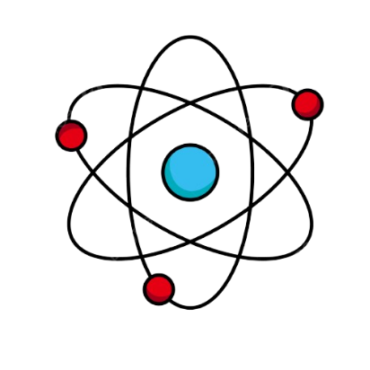

Ilustrasi Krypton pada Laser Kamera
Atur panjang gelombang dan intensitas laser untuk menghasilkan gambar terbaik:
Kualitas Gambar: -

Krypton memiliki nomor atom 36, tidak berwarna, tidak berbau, memiliki banyak garis spektrum dan plasma kripton, dan tidak berasa yang terjadi dalam jumlah kecil di atmosfer.
 Sumber gambar: wikipedia
Sumber gambar: wikipedia
Krypton biasanya digunakan dalam Pencahayaan dan Fotografi.